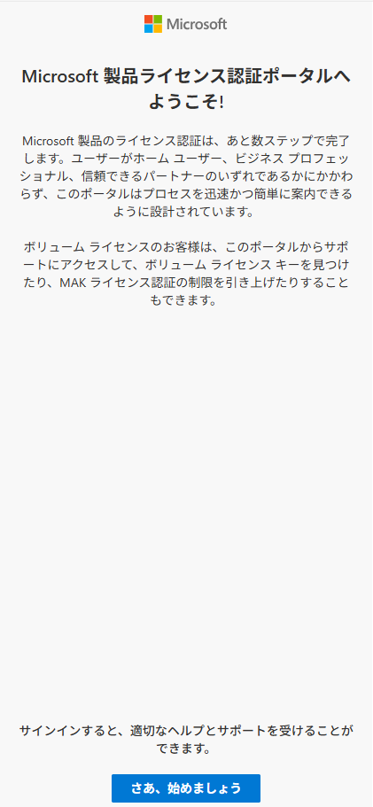
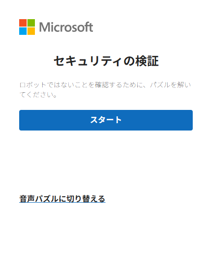
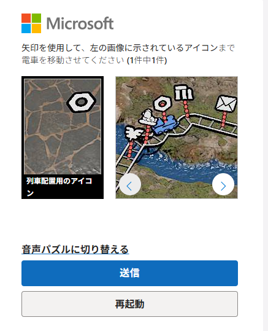
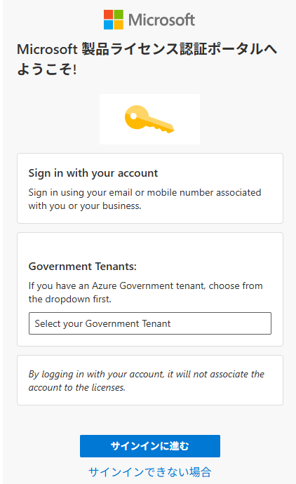
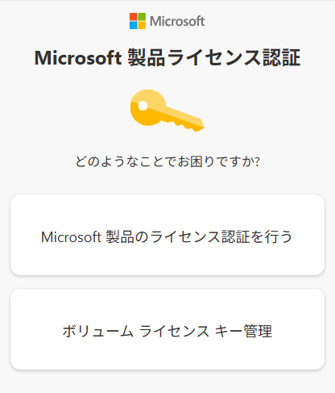
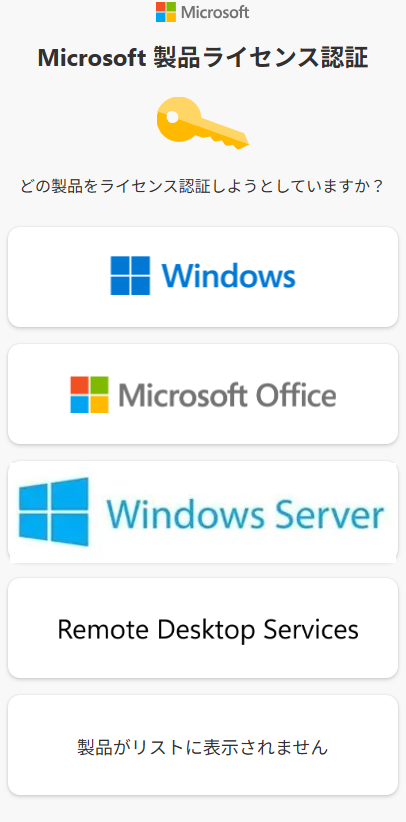
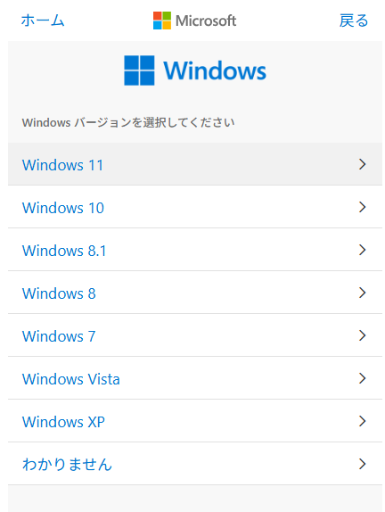
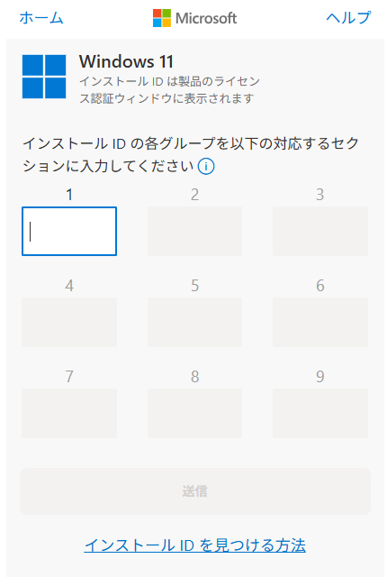
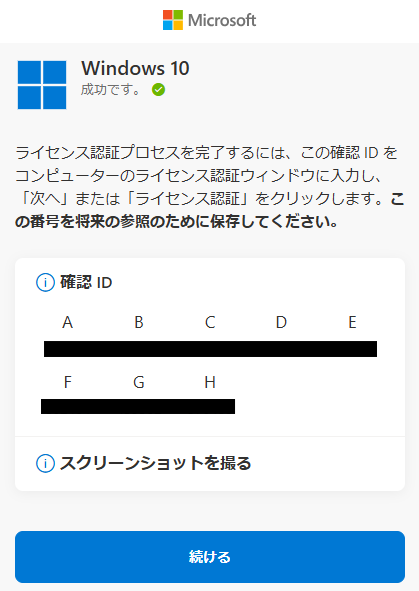
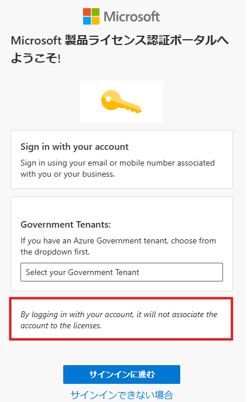

※本記事はマイクロソフト社員によって公開されております。
みなさま、こんにちは。Windows Commercial Support Device and Deployment チームの岩岡です。
先日、ライセンス認証における電話認証の手順に変更があり、スマートフォンなどインターネット接続のあるデバイス経由で、ライセンス認証に必要な確認 ID を取得する方式となりました。
今回の変更については、弊社の公開情報としても下記の通りリリースされておりますので、併せてご確認いただけますと幸いです。
原文: Activate Microsoft perpetual products using the Product Activation portal
(自動翻訳サイト)
新しい認証手順について多くのお問い合わせをいただいておりますので、本ブログでは、電話認証に代わる新しいライセンス認証手順と、よくいただくご質問事例をいくつかご紹介いたします。
なお、認証手順については今後さらに変更される可能性がございますため、本記事の内容は公開日時点の情報となる点にご留意ください。
また、手順が変更された際には、本ブログの情報が更新または削除される場合がございますので、何卒ご了承ください。
-補足
ご利用の環境がインターネットに接続している場合は、本記事で言及している電話認証の手順変更による影響はございません。
電話認証は、インターネット接続できない環境において製品をライセンス認証させるための手段としてご用意しておりました。
目次
認証手順について
よくある質問について
-従来の電話認証手順と同様に自動音声を利用して認証することができますか？
-Microsoft アカウントもしくは Microsoft Entra ID アカウントでのサインインは必須ですか？
-サインインしたアカウントに対してライセンス情報は紐づけられますか？
事前準備
認証対象の端末にてコマンド プロンプトを管理者として実行します。
以下のコマンドを実行して、プロダクト キーをインストールします。
1 | cscript %WinDir%\system32\slmgr.vbs /ipk <プロダクト キー> |
- 続けて以下のコマンドを実行して OS のインストール ID を確認します。確認したインストール ID はこの後の項番 12 で利用いたします。
1 | cscript %WinDir%\system32\slmgr.vbs /dti |
認証手順
インターネットに接続可能な任意の環境 (スマートフォンでも可能) にてライセンス認証用サイト(https://aka.ms/aoh) にアクセスします。
Microsoft 製品 ライセンス認証ポータルへようこそ！画面が表示されましたら [さぁ、始めましょう] のボタンをクリックして進みます。
セキュリティの検証画面が表示されますので [スタート] をクリックします。

- 画面の指示に従い、右側画面の矢印キーで列車を指定のアイコンまで移動させて [送信] をクリックします。

サインイン画面が表示されますので、任意の MSA アカウントや Microsoft Entra ID アカウントでサインインください。
※ライセンスとアカウントの紐づけは行われません。セキュリティ観点でサインインが必須となっておりますが、任意のアカウントをご使用いただければ問題ございません。
サインイン完了後 [Microsoft 製品ライセンス認証] 画面が表示されますので、[Microsoft 製品のライセンス認証を行う] を選択します。
[どの製品をライセンス認証しようとしていますか？] の画面で対象の製品 ([Windows] もしくは [Windows Server]) を選択します。

- 次の画面で OS バージョンを選択します (下記画像は [Windows] を選択した際の例)。

- インストール ID 入力画面が表示されましたら、”事前準備” の項番 3 で確認したインストール ID を入力し [送信] を押します。

確認 ID が表示されますので、ID をメモします。
入手した確認 ID を利用して認証対象の端末で以下のコマンドを実施し確認 ID を端末に登録します。
1 | cscript %WinDir%\system32\slmgr.vbs /atp <確認 ID> |
上記コマンドが正しく実行されると、確認 ID が正常に登録された旨のメッセージが表示されます。
- 念のため、以下のコマンドを実行してライセンス認証の状態が “ライセンスされています” と表示されていることをご確認ください。
1 | cscript %WinDir%\system32\slmgr.vbs /dlv |
従来の電話認証手順と同様に自動音声を利用して認証することができますか？
いいえ、これまでご提供しておりました従来の電話認証 (音声でのインストール ID の入力および確認 ID の取得) はご利用いただけなくなりました。
なお、これまで通り、認証対象の環境自体はインターネットにアクセスする必要はないため、別途インターネットに接続可能なスマートフォン等のデバイスをご用意いただき作業を行ってください。
Microsoft アカウントもしくは Microsoft Entra ID アカウントでのサインインは必須ですか？
はい、変更後の手順においてはセキュリティの観点から Microsoft アカウントもしくは Microsoft Entra ID アカウントでのサインインが必須となっております。
サインインしたアカウントに対してライセンス情報は紐づけられますか？
いいえ、サインインはセキュリティ対策として必須化しておりますが、サインインしたアカウントとライセンス情報の紐づけは行われません。
この点については、手順内で確認できる下記画面でも同様に確認いただくことが可能です。

特記事項
本情報の内容 (添付文書、リンク先などを含む) は作成日時点のものであり、予告なく変更される場合がございます。
更新履歴
2025/12/25 : 公開情報の追記
2025/12/17 : 補足事項の追記
2025/12/12 : 本ブログの公開